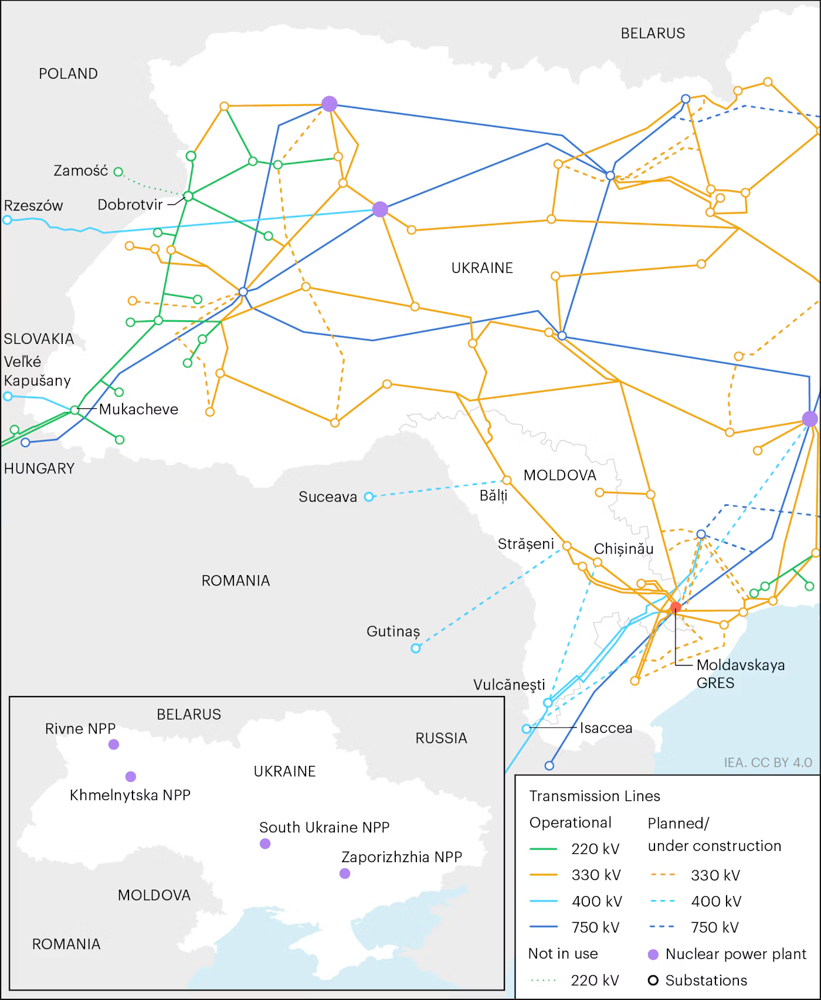

Kyiv after the blackout
KYIV / OCTOBER 9, 2026
AIR ALERT / 10:47 KYIV-TIME SNAPSHOT
Snapshot at 10:47 Kyiv time: alerts.in.ua recorded Kyiv under alert since 09:01. Earlier alerts that morning ran from 03:35 to 04:46 and 06:50 to 08:17. The threat level shown by the monitor was yellow. This is a timestamped third-party monitoring snapshot, not a statement of current alert status. Check live alert history.
In central Kyiv, about 100 meters from the Security Service headquarters, the sun rose over the president’s office on Bankova Street.
At the corner deli, which opens at 07:30, the cash registers were fully charged. They beeped their way through a long line of transactions as dozens of men in military fatigues, many chain-smoking, reported for work. Late, as they do every morning.
The city was moving again. That did not mean it was working normally.
At Zvyrinetska metro station, sanitation workers were already trying to collect the rubbish in the darkness. The streetlights were out. Metro service had been disrupted the previous evening, and the records available for this update do not establish the current operating pattern on each line. Elsewhere, residents were reporting interruptions to water supplies. A local Kyiv channel reported that both hot and cold water were unavailable in Obolon. That report has not been independently confirmed as a district-wide outage.
The sun came up. The tills beeped. The rubbish still needed collecting. People went to work. And residents were left to discover which of the services they depend on would work today.
What happened on October 8
The blackout unfolded over the course of October 8, with successive statements describing emergency restrictions, damage to the electricity grid and an attack on a key energy facility.
Earlier in the day, emergency power outages were introduced in Kyiv on Ukrenergo’s instruction. DTEK said ordinary outage schedules did not apply during emergency restrictions. Ukrenergo's latest notice reiterates that published schedules are not valid where emergency cuts apply. The practical consequence is easy to miss if you do not live here: my DTEK schedule shows only a couple of hours without electricity, but under emergency cuts that is no guarantee. A household listed as having power for the rest of the day may remain without it for much longer, potentially all day. We played this game last year.
Sources: Ukrenergo, official channel · DTEK, official channel.
By evening, the Ministry of Energy said Russian shelling had disconnected several elements of the electricity grid supplying Kyiv, leaving a significant number of consumers in some districts without power. Ministry of Energy, official channel.
Denys Shmyhal, first deputy prime minister and energy minister, said Russia had attacked an energy facility vital to Kyiv. He said the drone attack was still under way and emergency services had been deployed. Shmyhal’s statement.
DTEK separately attributed the emergency outages to Russian strike damage to energy equipment and high-voltage networks, saying the damage had reduced Ukraine’s ability to transmit electricity between regions. The accounts describe different parts of the same emergency. They establish that Russian attacks damaged energy infrastructure and that emergency restrictions followed. They do not, by themselves, provide a complete technical account of how the damage propagated through the grid or why the disruption reached the places it did.
The consequences were immediate and visible. Metro service was disrupted, electric public transport was restricted, traffic lights went dark and electric buses stood idle. Backup generators became part of the soundscape. People navigated streets with little or no lighting while trying to establish what was still operating.
I walked through Pechersk that evening. Many streets were dark. Some traffic lights were not working. During an air alert, I heard explosions. At Ploshcha Tolstoho, a metro worker told me that neither the red nor the green line was operating at that point. By the time I reached Zvyrinetska, the power was still out. These are observations from one route through the city, not a complete inventory of the outage. But they convey what a network failure looks like from street level.
The grid, and what comes next

The map shows why damage to high-voltage transmission equipment can affect consumers far beyond the site of a strike. Electricity has to move through a connected system, not simply be generated somewhere in the country. On the evening of October 8, the Energy Ministry said Russian shelling had disconnected several elements of the grid supplying Kyiv. On October 9, Ukrenergo said emergency outages were again in force in some regions following further attacks, with published schedules suspended where emergency cuts applied. Energy Ministry statement, October 8 · Ukrenergo notice, October 9.
Oleksandr Kharchenko, director of the Energy Research Center, said damage to key elements of Kyiv's power system, combined with scheduled repairs, had sharply reduced the reserves available to supply the capital. He said the situation could improve over the next 24–36 hours and improve further over a week. That is a conditional forecast, not a guarantee: it depends on Russia not launching another concentrated attack. Kharchenko's October 8 interview with Espreso.
In a separate interview with Radio NV, Kharchenko described repeated attacks on energy infrastructure around Kyiv as an apparent effort to isolate the capital from Ukraine's unified power grid. That is an expert assessment of the pattern, not an independently established statement of Russian intent. The public accounts so far do not provide a complete technical explanation of how each damaged component contributed to the scale and spread of the blackout. Radio NV interview, October 8.
The map is not a damage map. It cannot tell us which individual substations or transmission lines were hit on October 8, and it should not be used to infer the location of any specific strike. The immediate task is to establish what was damaged, what disconnected, and how much reserve capacity remains.
Air defense is another part of the inquiry, but it must be examined on its own evidence. Ukraine's air-defense systems have intercepted many incoming weapons, yet the existence of those systems does not establish that every critical facility can be protected against repeated attacks using different weapons and flight profiles. The Institute for the Study of War has analyzed the challenge posed by Russia's use of relatively inexpensive quasi-cruise missiles. That analysis provides wider context, but it does not establish why any particular energy facility was hit. Institute for the Study of War analysis.
The Kyiv cauldron
A blackout is an engineering emergency. Keeping a capital functioning through one is also a question of government.
Kyiv has an unusual and politically fraught arrangement. Vitali Klitschko is the city’s elected mayor and heads the Kyiv City State Administration. Alongside that structure sits the Kyiv City Military Administration, established after Russia’s full-scale invasion. The city’s ten district state administrations are another layer, with their heads appointed through the central government rather than elected by district residents.
This is not simply a quarrel between Klitschko and the President’s Office. It is a question of who holds authority, who controls the means to act, and who answers when things go wrong.
The Centre for Eastern Studies examined this problem in its July analysis, describing how overlapping institutions have created opportunities for both sides to shift responsibility rather than resolve disputes. Kyiv’s elected municipal government and its military administration have continued to coexist, with the boundaries between their responsibilities a recurring source of conflict. Centre for Eastern Studies: Between hammer and anvil.
Wartime arrangements may require exceptional powers. Klitschko’s electoral mandate does not, by itself, settle every legal question about those powers. But neither does martial law make democratic legitimacy irrelevant. Residents still need to know who is responsible for decisions affecting their lives, which authority has the power to act, and who must account for the consequences.
The same questions apply to the people appointed to run the districts. The issue is not whether someone who was a comedian, an athlete or a businessperson can govern. A previous occupation does not establish competence or incompetence. The relevant questions are whether appointees have the experience required for their responsibilities, whether their performance is scrutinised, and whether residents can hold the people exercising power accountable.
In my recollection, last winter, Kyiv came perilously close to disaster. The city’s ability to prepare for another winter is not just a matter of equipment and engineering. It depends on whether institutions can make decisions, coordinate action and take responsibility when the pressure becomes extreme.
If authority is divided and accountability unclear, residents are left to bear the consequences without a clear way to establish who was responsible for what.
Millions of people, and the services they depend on
Kyiv is a city of millions. In January 2026, Klitschko put its population at around 3.6 million. During the heating and electricity crisis, he subsequently estimated that about 600,000 people had left the city, based on mobile-phone data. That figure should not be mistaken for a verified count of permanent departures. Klitschko’s official channel.
More recently, rental listings in Kyiv have surged. The increase has prompted questions about whether more residents are considering leaving, but listings alone cannot establish how many people have departed or why. LUN rental-market report, via Glavcom.
The numbers are imperfect. The stakes are not. Decisions about the city’s governance affect millions of people, including those who cannot leave and those who choose to stay.
On October 8, Klitschko met representatives of Lithuanian local government at Kyiv City Hall. He thanked Lithuania for generators and charging stations donated for critical infrastructure and discussed preparations for winter and the need for additional backup power. Klitschko’s statement on the meeting.
The meeting was a practical expression of solidarity. It also points to the scale of the challenge: preparing a capital for winter requires equipment, planning, money and coordination across institutions.
Meanwhile, reports from residents continue to describe the immediate consequences of disruption. On the morning of October 9, a local Kyiv channel reported that both hot and cold water were unavailable in Obolon. Local report from Obolon.
That report is not, by itself, confirmation of a district-wide outage. It is a reminder that electricity, heating and water are not abstract entries in a national energy balance. They are the conditions of daily life, and failures in one system can affect others.
What we know, and what remains to be established
The first task is to establish the sequence of events and the physical damage. Which energy facilities and grid components were hit? Which elements disconnected? How did the loss of transmission capacity interact with the electricity available elsewhere in the country? What explains the scale and geographical spread of the resulting outage? Which services were lost, for how long, and when were they restored?
The second task is to establish how the city prepared and responded. Which institutions were responsible for contingency planning, backup power and coordination? What decisions were made before and during the outage? Where did arrangements work, and where did they fail?
These are related investigations, but they are not the same one. The fact that Kyiv’s governance is divided does not prove that the division caused the blackout. Nor does the fact that Russia attacked energy infrastructure answer every question about the preparedness and response of the institutions responsible for keeping the city running.
The simplest explanation that accounts for the evidence is a useful place to begin. It is not a substitute for evidence.
Kyiv woke up this morning. The sun rose over Bankova Street. Shops opened, cash registers beeped and sanitation workers went to work in the dark.
The question is not whether the city will carry on. It will.
The question is what happened to the systems on which it depends, what has been done to make them less vulnerable, and who is answerable to the people who depend on them.
Those questions deserve answers before the next night of darkness, not after it.